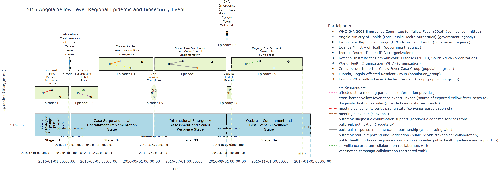
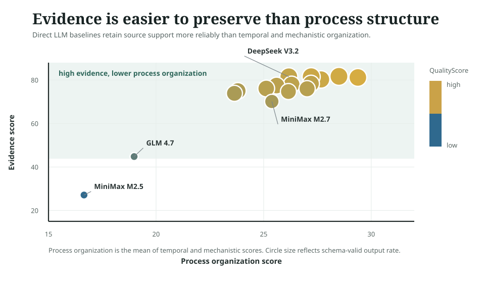

H²EPR-Bench
An evidence-traceable benchmark for event-process reconstruction.
H²EPR-Bench evaluates whether models can reconstruct hierarchical heterogeneous Event-Process Graphs from fixed evidence contexts.
Background & Motivation
Real-world events are not static text objects. They unfold through stages, actors, actions, dependencies, outcomes, and evidence distributed across sources. Evaluating whether a model understands such events therefore requires more than summaries, timelines, or isolated extraction targets.

Event-process graphs keep stage order, actor interactions, operations, relations, and evidence links visible in the same representation.
This turns event understanding into a structured reconstruction problem rather than a single text-generation target.
H²EPR-Bench treats events as structured process objects. Starting from fixed evidence contexts, each event is represented as a hierarchical heterogeneous Event-Process Graph that makes stage progression, actor interactions, temporal dependencies, action-result logic, and evidence links explicit.
This representation makes the benchmark useful beyond leaderboard scoring. It can evaluate event-process reconstruction, support analysis of recurring event patterns, and provide structured event substrates for prediction and simulation settings, such as masking future stages, continuing partially observed events, or connecting multiple events into larger market or social-process scenarios.


Benchmark Construction
Fixed-evidence reconstruction
Each system receives an event descriptor and a fixed public evidence context, then returns a structured Event-Process Graph.
Medium-granularity Gold
Official scores are computed against gated Gold references. Public artifacts support browsing, presentation, and reuse.
Hierarchical heterogeneous representation
The target representation covers macro stages, stage-internal structure, participants, actions, relations, temporal anchors, and evidence links.
Diagnostic graph matching
Evaluation compares structural fidelity, temporal consistency, action-result logic, and evidence traceability.

The public repository is designed for browsing, reuse, and inspection. Official benchmark scoring is tied to the gated Gold references, so release artifacts remain useful without exposing answer keys in the open dataset.
Dataset Overview
Core-1000 spans six domains and twenty-six event categories, with stage-level records and public inspection artifacts aligned by canonical event IDs.


Interactive Explorer
The Explorer is the browsing layer for event metadata, stage tables, timeline views, and public graph summaries.

Representative Event Processes
FinalCascade-derived event timelines across multiple domains.

Results & Diagnostics
Direct reconstruction results expose a consistent gap between evidence retention and structured event-process recovery.
Each system receives the same event descriptor and evidence context.
The model returns a hierarchical heterogeneous event-process graph.
Invalid normalized outputs remain part of the official all-instance score.
Outputs are compared against gated medium-granularity Gold references.
Scores separate structure, temporal order, action-result logic, and evidence.
Each card summarizes one direct reconstruction baseline across the official score and diagnostic subscores.
Loading model diagnostics...


Evidence score is plotted against process organization, defined as the mean of temporal and mechanistic subscores. The paired instance-spread panel shows how this aggregate pattern varies across events.


Sortable all-instance results for the 16 direct reconstruction baselines.
| System | Valid outputs (%) | QualityScore | Structure | Temporal | Mechanistic | Evidence |
|---|---|---|---|---|---|---|
| Loading leaderboard data... | ||||||
Citation
@misc{h2eprbench2026,
title = {H²EPR-Bench: An Evidence-Traceable Benchmark for Event-Process Reconstruction},
author = {AgenticFinLab},
year = {2026},
note = {Forthcoming}
}